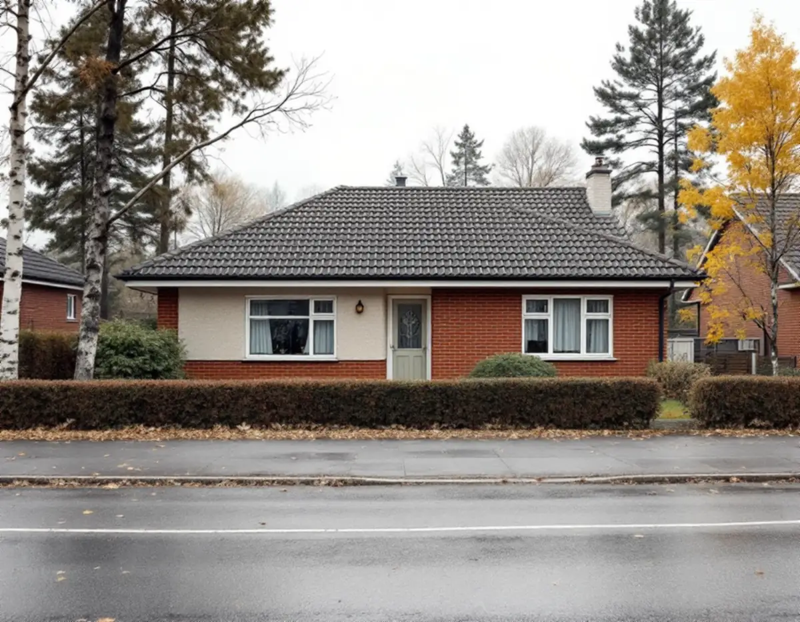
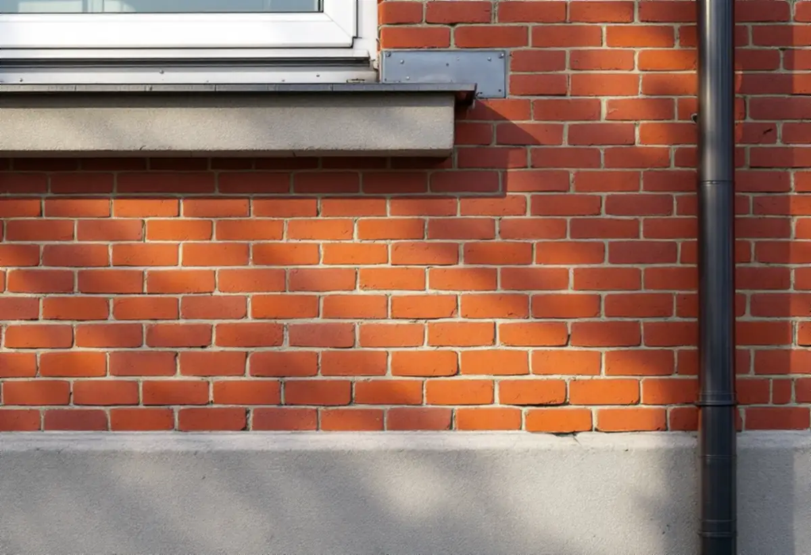

Epok och material
Vi tar reda på när huset byggdes och vilket fasadmaterial det hade från början.
Haninges kulturmiljöprogram delar in småhusen efter byggepok, och för varje epok finns råd om just fasaden. En tegelvilla från 1950-talet, ett grupphus i mexitegel från 1970-talet och en panelad gård på landet kräver tre olika sätt att renovera. Geal Entreprenad AB renoverar fasader i Handen, Jordbro, Vendelsö, Västerhaninge och övriga Haninge, med gratis platsbesök och skriftligt kostnadsförslag.

Programmet Haninges karaktärsmiljöer, som WSP tog fram åt kommunen 2019 och som senast uppdaterades i november 2020, beskriver 1940-talets småhus som enkla en- eller tvåplansvillor i trä, puts eller fasadtegel. På 1950-talet blev fasaderna mer sammansatta: rött eller gult tegel kombinerat med grov spritputs eller med trä i mustiga kulörer. Exempel på sådana områden finns enligt programmet i Handen, Jordbro, Vendelsö, Vendelsömalm och Västerhaninge.
Råden är konkreta. Fasadändringar som avviker från husets ursprungliga utformning ska undvikas, och programmet tar själv exemplet att en fasad i tegel inte ska putsas. Dörrar och fönster räknas som en bärande del av karaktären, och programmet påpekar att även mindre fasadändringar kan påverka ett helt kvarter.
För en tegelvilla handlar renoveringen därför om att laga murverket och byta skadade stenar i stället för att dölja det. Spritputsen lagas med en puts som liknar den gamla i struktur. Boverket konstaterar att putsbortfall nästan undantagslöst beror på fukt, så vi letar efter orsaken, till exempel ett läckande bleck eller ett stuprör, innan någon yta åtgärdas.

Rekordårens småhus från 1960- till 1980-talet ligger oftast i grupper där samma volym upprepas längs gatan, till exempel i Jordbro, Brandbergen, Västerhaninge och Handen. Programmet nämner tegel och kalksandsten, så kallat mexitegel, gärna i kombination med panel. Mot 1980-talet blev färgerna ljusare och dekorativa snickerier kom tillbaka.
Programmet säger att husens typiska fasadutformning när det gäller materialval och färgsättning ska värnas, och att större exteriöra ändringar som tilläggsisolering mot allmän plats bör undvikas. Byter du panel på ett radhus är det alltså klokt att välja samma profil och riktning som grannarna har.
Hus från den här tiden kan innehålla asbest. Boverket skriver att det är sannolikt i byggnader uppförda 1940–1980 och att provtagning är det enda säkra sättet att veta. Visar provet asbest i en fasadbeklädnad ska rivningen enligt Arbetsmiljöverket göras av ett företag med tillstånd, som ska söka det åtta veckor innan arbetet börjar. Taket ses ofta över samtidigt, och mer om det finns under takrenovering i Haninge.
På Haninges landsbygd är trä och sten de vanligaste materialen. Programmet beskriver hur timmerstommarna under 1800-talet kläddes med stående panel, oftast locklist- eller lockribbpanel, och hur liggande panel förekom från 1800-talets mitt. De större boningshusen fick ibland reverterade fasader, vilket innebär att trästommen putsades. Tegel och senare tillägg av plåtfasader räknar programmet som främmande material på landsbygden.
Ett av råden är riktat direkt till den som har ett hus som redan har tilläggsisolerats: vid en fasadändring kan fasaden med fördel återställas, och ny isolering kan i stället göras inifrån. Boverket beskriver avvägningen. Utvändig isolering är ofta bäst för energi och fukt men kan ge fönster som hamnar djupt in och en vägg som hänger ut över sockeln. Invändig isolering lämnar fasaden orörd men gör väggen kallare, vilket ökar risken för röta i trä och frostsprängning i tegel och sten.
Vi börjar därför med att undersöka vad som finns under den nuvarande panelen. Ibland finns den gamla locklistpanelen kvar under en senare inklädnad, och då kan den ofta lagas och sparas. Om kulören finns mer under målare i Haninge.
Sedan den 1 december 2025 behövs normalt inget bygglov för att byta kulör eller fasadmaterial på ett en- eller tvåbostadshus. Boverket påpekar att det ändå kan krävas lov om huset omfattas av utökad lovplikt, i plan- och bygglagen eller i detaljplanen. Haninge kommun skriver att lov behövs om fasaden ändras på en byggnad eller i ett område som är särskilt värdefullt, och att stora delar av Haninge är kulturmiljöer.
Kommunen uppdaterar just nu det digitala kartskiktet som visar de särskilt värdefulla kulturmiljöerna. Tills det är klart får du kontakta bygglovsenheten för att veta om din fastighet omfattas. Det går också att söka frivilligt lov. Krävs lov behöver byggherren även en kontrollplan, och kommunen har lagt ut ett exempel på en kontrollplan för fasadändring. Mer om material och metoder står på sidan om fasadrenovering.
Vi tar reda på när huset byggdes och vilket fasadmaterial det hade från början.
Tegel, puts, panel, sockel och bleck gås igenom, och vi noterar var fukten kommer in.
På hus från 1940–1980 föreslår vi prov på misstänkt material innan något rivs.
Lagning, byte och eventuell isolering beskrivs och prissätts var för sig.
Vi hjälper dig att formulera frågan till bygglovsenheten om fastigheten kan vara särskilt värdefull.
Arbetet görs i torrt väder, och vi går runt huset tillsammans när det är klart.
För ett småhus räknar Skatteverket in att byta och reparera fasader, tilläggsisolera, måla fasader och reparera eller byta fönster. Även att sanera asbest i samband med byggarbete ger rotavdrag, medan en mätning av asbest i sig inte gör det.
Avdraget är 30 procent av arbetskostnaden, högst 50 000 kr per person och år och högst 75 000 kr tillsammans med rutavdrag. Material och resor ger inget avdrag. Geal drar avdraget direkt på fakturan.
Hur stor del av murverket eller panelen som är skadad, om fogar och puts måste lagas, om provtagning behövs och om en äldre inklädnad ska tas bort. På en gård med flera byggnader görs varje hus till en egen post. Efter ett gratis platsbesök får du ett skriftligt kostnadsförslag.
Puts, panel och tilläggsisolering.
Fasadrenovering i Stockholm →Takbyte, takbesiktning och plåtarbeten.
Takläggare i Haninge →Dalarö, Vendelsö och Brandbergen.
Takrenovering i Haninge →Vakuumtoalett, sluten tank och öarna.
Badrumsrenovering i Haninge →Nytt hus och tillbyggnad i omvandlingsområden.
Byggföretag i Haninge →Egnahem, sportstugor och hus i sluttning.
Golvläggare i Haninge →Egnahem, grupphus och Dalarö.
Köksrenovering i Haninge →Egnahem, grupphus och sommarvillor i Haninge.
Målare i Haninge →Falsad plåt, sjöbodar och beslag i Haninge.
Plåtslagare i Haninge →Verandor, altaner och skärmtak.
Snickare i Haninge →